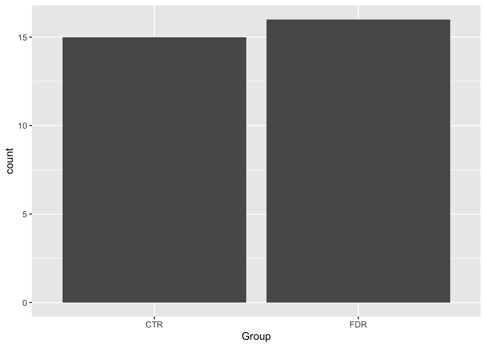
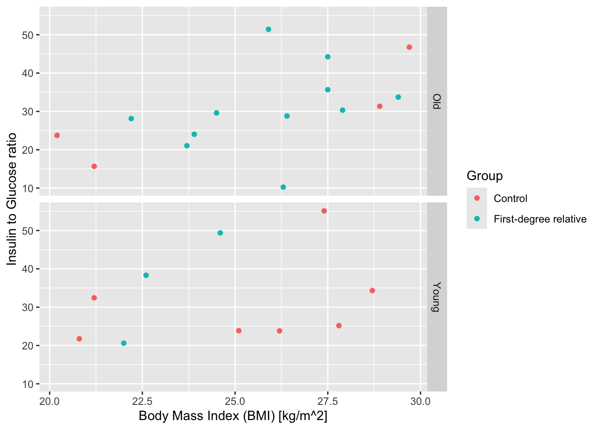
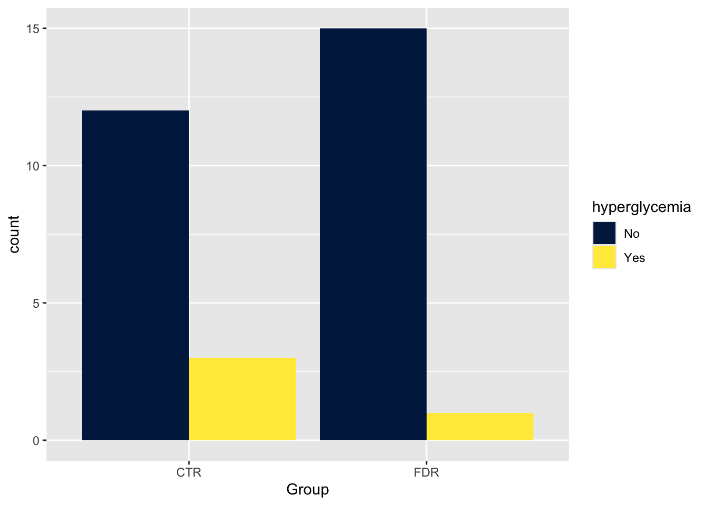

Table of content just for me (cmd+shit+p and search for outline)
Insert code chunk (cmd+shit+p and search for chunk, “Insert a new chunk code”)
run line (ctrl + enter)
Zenodo is also a place with free datasets
To find help through console we can use “?geom_bar” to know something about geom_bar() function
Setup code chunk
“setup” is the label and “setup” is special because it is decoted that this chunk should be run first
library(tidyverse)
── Attaching core tidyverse packages ──────────────────────── tidyverse 2.0.0 ──
✔ dplyr 1.1.4 ✔ readr 2.1.5
✔ forcats 1.0.0 ✔ stringr 1.5.1
✔ ggplot2 3.5.1 ✔ tibble 3.2.1
✔ lubridate 1.9.4 ✔ tidyr 1.3.1
✔ purrr 1.0.2
── Conflicts ────────────────────────────────────────── tidyverse_conflicts() ──
✖ dplyr::filter() masks stats::filter()
✖ dplyr::lag() masks stats::lag()
ℹ Use the conflicted package (<http://conflicted.r-lib.org/>) to force all conflicts to become errors
# option + minus = <-# option + i = |#| message: false # removes message output from file#| warning: false # removes warnings from output file# read_csv2 means to read semicolon seperated files like the python ,sep=;data_post_meal <-read_csv2(here::here("data/post-meal-insulin.csv"))
ℹ Using "','" as decimal and "'.'" as grouping mark. Use `read_delim()` for more control.
Rows: 31 Columns: 85── Column specification ────────────────────────────────────────────────────────
Delimiter: ";"
chr (2): OFS.ID, Group
dbl (83): Age, BMI, Length, Weight, Bone.mineral.DXA, Fat.mass...DXA, Fat.ma...
ℹ Use `spec()` to retrieve the full column specification for this data.
ℹ Specify the column types or set `show_col_types = FALSE` to quiet this message.
Figure 2: Barplot: plotting one discrete variables
# Group and glykemi are columns in the datasetdata_post_meal |>ggplot(aes(x = Group, fill = glykemi)) +geom_bar()
Warning: The following aesthetics were dropped during statistical transformation: fill.
ℹ This can happen when ggplot fails to infer the correct grouping structure in
the data.
ℹ Did you forget to specify a `group` aesthetic or to convert a numerical
variable into a factor?

# fixing abovementioned issue using as.charachterdata_post_meal |>ggplot(aes(x = Group, fill =as.character(glykemi))) +geom_bar()
# position_dodge() is used for seperating the two columnsdata_post_meal |>ggplot(aes(x = Group, fill =as.character(glykemi))) +geom_bar(position =position_dodge())
Use filter() to find how many participants have a BMI of more than or equal to 20 and less than or equal to 40, and are in the “FDR” Group. How many are there?
Create a percent_body_fat column with mutate() by dividing the Fat.mass.DXA by the Weight, then multiplying by 100. Hint: In R, use * to multiply and / to divide. Then pipe to filter() to find out how many participants have a percent_body_fat greater than 30.
post_meal_data |>
( >= ___ & ___ <= ___ & ___ == ___)
# Task 2.
post_meal_data |>
___(
___ = (___ / ___) * 100
) |>
( > ___)
# Task 1.data_post_meal |>filter(BMI >=20& BMI <=40& Group =="FDR") # 16 rows so 16 people unless tidier dataset, then it is 15
data_post_meal_small_tidied |>filter(BMI <30) |>mutate(young =if_else(Age <40, "Young", "Old")) |>ggplot(aes(x = BMI, y = insulin_glucose_ratio, colour = Group)) +geom_point() +facet_grid(rows =vars(young)) +labs(x ="Body Mass Index (BMI) [kg/m^2]",y ="Insulin to Glucose ratio" )

Exercise 12.4
Make multi-dimensional plots!
data_post_meal |>mutate(percent_body_fat = Fat.mass.DXA / Weight *100,young =if_else(BMI <=40, "Young", "Old") ) |>ggplot(aes(x = Group, y = percent_body_fat, colour(young))) +geom_jitter(width =0.2) # width is to make the points cluster a bit more together# task 2data_post_meal |>mutate(insulin_glucose_ratio = (auc_ins / auc_pg),insulin_insensitive =if_else(insulin_glucose_ratio >mean(insulin_glucose_ratio), "Insensitive", "Sensitive") ) |>ggplot(aes(x = BMI, y = Bone.mineral.DXA, colour(insulin_insensitive))) +geom_point() +geom_smooth() +facet_grid(cols =vars(insulin_insensitive))
`geom_smooth()` using method = 'loess' and formula = 'y ~ x'
(a) Distribution of percent body fat by group and age category.
(b) Relationship between BMI and bone mineral density, split by insulin sensitivity.
Figure 5: Two, mult-dimensional plots of our data.
Exercise 12.6
changing colours
# Tasks 1. and 2.data_post_meal |>mutate(hyperglycemia =if_else(glykemi ==1, "Yes", "No")) |>ggplot(aes(x = Group, fill = hyperglycemia)) +geom_bar(position =position_dodge()) +geom_bar(position =position_dodge()) +scale_fill_viridis_d(option ="cividis") # other options: cividis, magma

# Tasks 3. and 4.data_post_meal |>ggplot(aes(x = auc_pg, y = auc_ins, colour = BMI)) +geom_point() +# scale_fill_viridis_c() # d for discrete and c for continuous in the function namescale_colour_viridis_c(option ="inferno")
data_post_meal_small_tidied |>group_by(Group) |>summarise("Mean Age [years]"=round(mean(Age), 1),"Mean BMI [kg/m$^2$]"=round(mean(BMI), 1) ) |>ungroup() |># to ungroup the data, not relevent outside of code chunk unless assigned to variable by <- knitr::kable() # make table looks nicer